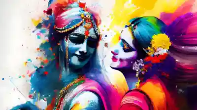

HAPPY HOLI

Holi, also known as the "Festival of Colors,"
is a popular Hindu festival celebrated across India and
in many parts of the world.
It marks the arrival of spring and the victory of good over evil.
The festival is observed on the full moon day of the Hindu month of Phalguna,usually in March.
People celebrate Holi by throwing colored powders, splashing water, dancing, and
enjoying festive sweets like gujiya and thandai.
The night before Holi, Holika Dahan is performed, symbolizing the burning away of negativity.
Holi promotes love, joy, and unity, bringing people together regardless of their differences.
Holi is one of the most vibrant and joyous festivals in India,
symbolizing happiness, togetherness, and the triumph of good over evil.
The festival begins with Holika Dahan on the night before Holi,
where people light bonfires to signify the burning of negativity and the victory of devotion,
as told in the legend of Prahlad and Holika.
On the main day of Holi, people of all ages come together to play with colors,
water balloons, and pichkaris (water guns), filling the streets with laughter and excitement.
Apart from playing with colors, Holi is also a time to relish delicious treats like gujiya,
malpua, dahi vada, and the refreshing thandai
होली भारत का एक प्रमुख और रंगों से भरा हुआ त्योहार है, जिसे पूरे देश में बड़े हर्षोल्लास के साथ मनाया जाता है।
यह पर्व बुराई पर अच्छाई की जीत और बसंत ऋतु के आगमन का प्रतीक है।
होली फाल्गुन मास की पूर्णिमा को मनाई जाती है, जो आमतौर पर मार्च के महीने में पड़ती है।
यह त्योहार दो दिन तक चलता है—पहले दिन होलिका दहन किया जाता है, जिसमें लोग आग जलाकर बुराई के नाश का संदेश देते हैं।
For more informationinfo@vaishaliheritage.com